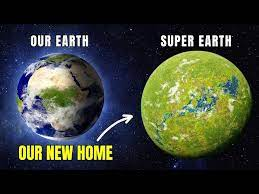
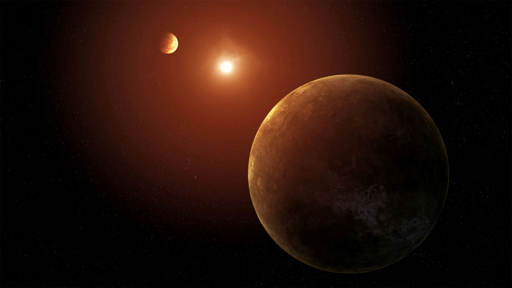
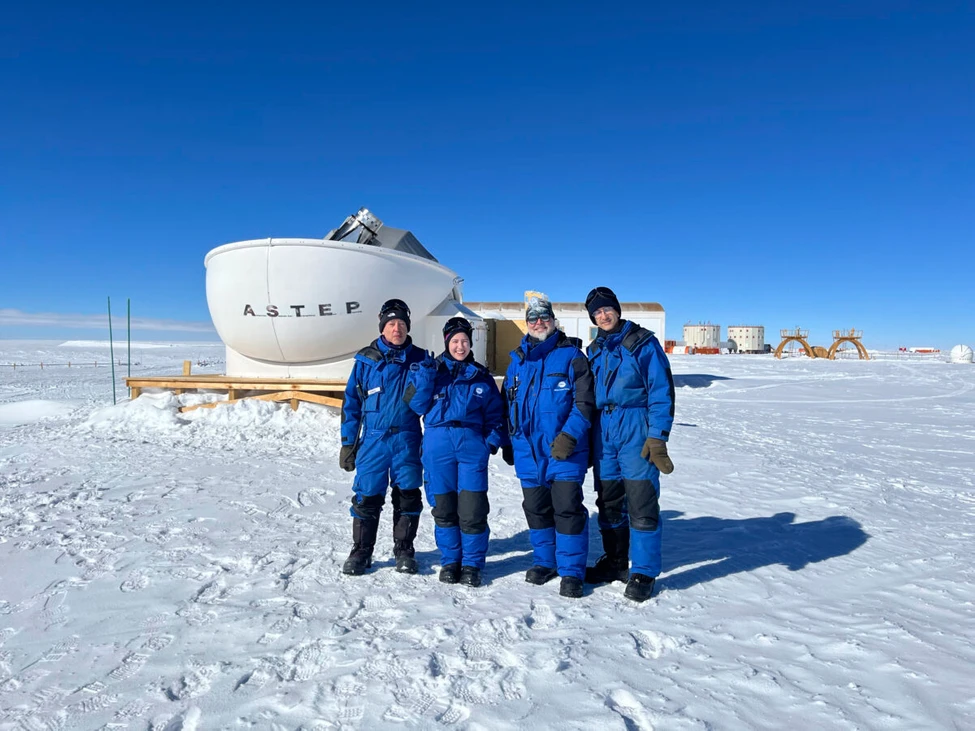

What about planet TOI-715 b? Why is it the new 'super-Earth'?
The new 'super-Earth' or TOI-715
b is comparable to that of our own Earth for countless reasons hence receiving its same. Below is
listed
the features that make it the new 'super-Earth'.
Habitability
Planet TOI-715 b nicknamed the new 'super-Earth' is closely identical to our
own Earth as it is
potentially
habitable. Planet TOI-715 b is positioned in the 'conservative' habitable zone of its
parent
star; a
zone in
which temperatures allow liquid water to exist on its surface.
What are its possibilities of being habitable?
- Obtains an atmosphere
- Considered as a “water world”
- Sits right in the region of its star where its not too hot or too cold

Size and More
The exoplanet, TOI-715 b is about 1 ½ times wider than our Earth!
Because of its layout it
received its
name as
'super-Earth' indicating a larger size. Despite its size, this newly discovered planet only
takes
19 days
to
orbit its parent star while it takes a considerable 365 days for Earth to orbit the Sun.

Sun-like Star
The newly found 'super-Earth' is further comparable to Earth as it also has a parent star, which
is a red
dwarf. This star goes by the name of TOI-715 and is smaller and cooler than our Sun. Because of
it being
a red dwarf star, planets like TOI-715 b can crowd closer and still be without risk within the
Sun-like
star's habitable zone.
Is Exterrestrial Life A Possibility?
Because of TOI-715 b being located in the habitable zone of its parent star (TOI-715), the question for
exterrestial life outside of Earth debated. With more technological tools and facilities that guide
astronomers into discovering planets within habitable zones, the search for exterrersital life in
habitable
zones remains a topic to be discussed.
The next steps in this discovery would be to confirm planet TOI-715
as a habitable planet with water liquid and the potential for it to support life.
How Far Is It?
TOI-715 b is
137 light years
away from Earth!
Who Discovered TOI-715 b?
This 'super-Earth' was discovered by Tess, NASA's Transiting Exoplanet Survey Satellite. The
international
team of scientists who made the discovery was led by Georgina Dransfield from the University of
Birmingham, United Kingdom.
The tools/facilities used that made the discovery possible:
- Gemini-South
- Las Cumbres Observatory telescopes
- ExTrA telescopes
- SPECULOOS network
- TRAPPIST-south telescope
